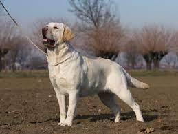
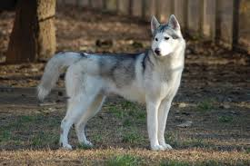
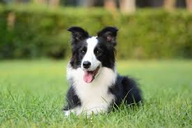
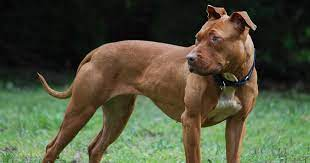

1.
Labrador
media taglia
The Labrador retriever or Labrador is a British breed of retriever gun dog. It was developed in the United Kingdom from fishing dogs imported from the colony of Newfoundland (now a province of Canada), and was named after the Labrador region of that colony. It is among the most commonly kept dogs in several countries, particularly in the Western world. The Labrador is loyal, obedient and playful. It was bred as a sporting and hunting dog, but is widely kept as a companion dog. It may also be trained as a guide or assistance dog, or for rescue or therapy work.
Laika
2.
Husky
media taglia
Il Siberian Husky è stato selezionato nella sua forma moderna negli Stati Uniti d'America a partire da cani originari della Siberia, dove era stato allevato per secoli dal popolo dei ciukci per il traino delle slitte. Agli inizi del Novecento un mercante di pellicce, William Goosak, ne importò degli esemplari in Alaska. Nella All Alaska Sweepstakes del 1909 il traino da lui organizzato arrivò terzo, destando stupore anche per la differenza di taglia con i cani solitamente utilizzati, tanto da guadagnare l'appellativo di siberian rats (ratti siberiani).
Bobby
3.
Border Collie
media taglia
The Border Collie is a working and herding dog breed. They come from the Anglo-Scottish border region and are used to herd livestock, specifically sheep. The Border Collie is considered a highly intelligent, extremely energetic, acrobatic and athletic dog. They frequently compete with great success in sheepdog trials and a range of dog sports like dog obedience, disc dog, herding and dog agility.
Bibbi
4.
Pitbull
media taglia
L'American Pit Bull Terrier, più comunemente Pit Bull o semplicemente Pitbull, è una razza canina generalmente ritenuta il risultato dell'incrocio attuato a partire dalla fine del XIX secolo, tra razze di tipo Bull come l'Old Bulldog e razze di tipo Terrier.[1] Secondo alcuni autori, come Richard Stratton, si tratta dell'autentico bulldog da lavoro rinascimentale senza apporto di altre razze. Questa razza fa parte dei Terrier di tipo Bull.
Sonnifero
5.
Dalmata
media taglia
El dálmata es una raza canina que debe su nombre a la histórica región de Dalmacia. Su característica principal es su singular pelaje moteado de color negro, hígado o limón. Al nacer, las crías carecen de manchas, las cuales van apareciendo por todo su cuerpo durante el primer año de vida. La hiperuricemia es común entre los dálmatas, por lo cual suelen ser considerados los únicos mamíferos uricotélicos. Otro rasgo de origen genético propio de la raza es su alta predisposición a la sordera.